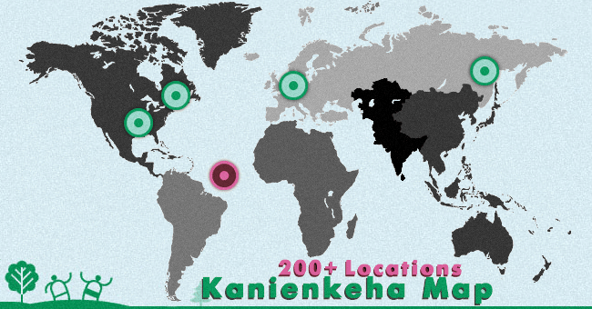

Welcome to Kanienkeha.net
An open source endangered language initiative. If you want to help keep us going strong and putting out new content every week, please consider a small donation. You’ll be happy you did!
Most Recent
Fresh from the dictionary — everyday commands, phrases and occupations.
No matches here yet — help us add it.

Kanienkeha, around the world
Learners and speakers in over 200 locations are building this resource together. Find out who’s learning near you.
Explore the mapUploading your Notes
Help our language curators, we’ll archive your notes.
We appreciate that you’re taking great language notes. As part of our Open Source project, our research grows when we grow together.
Share your notes
Total Site Numbers
From the blog
Stories, guides and reflections on keeping a language alive.

She:kon / Greetings
This website was created for community development of the Kanienkeha online language resources. With help from you and our elders we can create a digital inventory of the language and discuss the cultural significance behind each word. If we can build the dictionary to about 10,000 words this program will expand to a next phase and development will start on a Google-style translator with audio to help with pronunciation.
Nia:wen / Thank you
— Benjamin Doolittle, MohDictionary
 Newsletter
NewsletterHelp keep the language strong
Become a patron, spread the word, or add a word you know.
Become a patron on Patreon Donate EnglishKanienkeha (Mohawk)
EnglishKanienkeha (Mohawk)